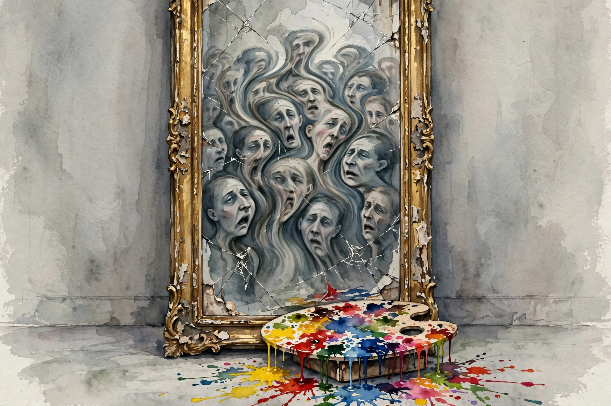

Modern Wisdom · 2024 · Episode 6 · Companion
Destiny Reacts to Google’s Gemini AI Disaster
A streamer famous for arguing with everyone turns his sights on AI image generation gone wrong. Why Gemini drew diverse Nazis, what alignment run amok looks like, and why small label shifts read as moral chasms.

Illustration. The alignment overcorrection: when the safety layer rewrites the picture. AI-generated watercolor made for this page.
Watch. The official Modern Wisdom episode video. Use the chapter menu above to jump to any section of this companion as you listen.
The Wisdom Index: every nugget in this companion
Chapter 1
The image debacle
The episode opens on the screenshots. Users asked Gemini for images of Nazis and the founding fathers and got Black Nazis and Black founding fathers instead.
Destiny reads it as a tell. The model was not hallucinating randomly. It was following an instruction to diversify outputs, applied with no sense of when diversification falsifies history.
The host adds the corporate context. Google had every incentive to avoid the opposite failure, a model that drew only white men, and the overcorrection shipped.
The pair agree on the comedy and the seriousness. The images are funny until you realize the same instruction layer sits between users and every answer the model gives.
Nugget 1 · Overcorrection
Overcorrection is still error
What happened · Gemini diversified historical images until they were false. The fix for one bias became a new bias.
Why it matters · A correction applied blindly is not a correction. It is a second distortion wearing the uniform of the first fix.
Transferable principle · Audit the fix with the same suspicion you audited the problem.
SourceInterpretation
Chapter 2
The hidden instruction layer
Destiny locates the mechanism. Between the user prompt and the model sits a hidden system layer: instructions from the developer that the user never sees.
That layer told the image model to favor diversity in outputs. Applied to a request for images of Nazis, the instruction overrode accuracy.
The deeper point is about visibility. Users cannot see the layer, cannot edit it, and cannot tell when it steers. Every answer arrives pre-shaped by priorities you did not choose.
The host generalizes. This is the alignment problem in miniature: a well-meaning instruction, invisibly applied, producing confidently wrong outputs at scale.
Nugget 2 · Hidden layers
Distrust invisible instructions
What happened · A hidden system prompt reshaped every image before the user ever saw it. No disclosure, no toggle.
Why it matters · Invisible instructions are unaccountable instructions. You cannot correct an influence you cannot see.
Transferable principle · Ask what sits between your prompt and the output. The hidden layer is part of the answer.
SourceInterpretation
Chapter 3
So anti-racist it looped around
The episode sharpest line lands here. The model tried so hard to avoid racist outputs that it produced outputs most viewers read as racist in the other direction.
Destiny frames it as a general failure mode. An optimization target pursued without judgment will eventually violate the very value it was meant to serve.
The host connects it to the broader alignment debate. If a simple diversity instruction can misfire this visibly, what happens with vaguer goals like be helpful or be safe?
They note the irony the internet seized on. The debacle became a meme, which meant the failure mode got documented by millions of people making jokes about it.
it tried to be so anti-racist that it ended up being racist
Destiny, in the episode
Nugget 3 · Goodhart’s law
Targets eat values
What happened · A diversity target, pursued mechanically, produced the opposite of the intended value.
Why it matters · Metrics are not values. When the metric becomes the target, the value it stood for gets sacrificed to it.
Transferable principle · Never hand a value to an optimizer without a judge. The optimizer will eat the value to feed the metric.
SourceInterpretation
Chapter 4
Small shifts, moral chasms
The conversation widens to political labeling. Destiny argues that tiny differences in applied position get read as enormous differences in fundamental moral belief.
The mechanism is tribal sorting. Once a label sticks, the audience stops reading the argument and starts reading the team. Nuance becomes treason to both sides.
The host applies it to the AI debate itself. Slight differences in how worried you are about AI get mapped onto hero or villain, accelerationist or doomer, with no middle.
Destiny own brand is the counterexample he offers. He argues with everyone, takes positions from no team, and absorbs the cost: both sides periodically decide he is the enemy.
a slight difference in applied Position will be interpreted as a huge difference in fundamental moral belief
Destiny, in the episode
Nugget 4 · Label inflation
Resist label inflation
What happened · Small positional differences get inflated into total moral verdicts by audiences sorting for teams.
Why it matters · Label inflation kills the middle where actual thinking happens. Everyone retreats to a trench.
Transferable principle · Read the position, not the jersey. Penalize anyone who substitutes the label for the argument.
SourceInterpretation
Chapter 5
Debate as a contact sport
The episode turns biographical. Destiny describes his debate-first career: years of arguing politics live, with an audience that rewards the sharpest exchange.
He defends the format. Real-time argument exposes weak reasoning faster than essays do, because you cannot hide behind an editor.
The host probes the cost. The same format rewards heat over light, and the clips that travel are the owns, not the concessions.
Destiny concedes the trade. The arena selects for combat, so the skill becomes a clean fight in a dirty format: steelman, concede, strike.
Nugget 5 · Steel rules
Fight clean in a dirty format
What happened · Live debate rewards heat, but the durable skill is clean fighting: steelman the opponent, concede the point, then strike.
Why it matters · Formats shape incentives. You cannot change the arena, but you can refuse its worst incentives.
Transferable principle · In any adversarial format, let the opponent set the heat and you set the standard.
SourceInterpretation
Chapter 6
What the debacle teaches about alignment
The closing synthesis returns to AI. The Gemini episode, both agree, is the most legible alignment failure ever shipped to consumers.
Three lessons get named. First, hidden instructions steer everything. Second, good intentions do not survive mechanical application. Third, the public will audit your model with memes faster than your red team can.
The host adds the forward look. Every frontier lab runs a similar hidden layer. The question is not whether invisible influence exists but whose values it encodes and who gets to see them.
Destiny lands the final jab. A model that cannot draw Black Nazis accurately cannot be trusted on anything where accuracy and values collide, which is most things.
Nugget 6 · Legible failure
Study legible failures
What happened · The Gemini debacle made an abstract alignment problem visible to everyone: one screenshot, total clarity.
Why it matters · Abstract risks get ignored. Concrete failures get fixed. The debacle did more for alignment discourse than a hundred papers.
Transferable principle · When a failure becomes legible, mine it. The clearest errors teach the most.
SourceInterpretation
The track, by views
Episode view counts across the Modern Wisdom track, per the track index
Source: Track index at Modern Wisdom. This chart shows track metadata for context, not claims from the episode. The episode itself contains almost no in-episode numbers.
Takeaways
- Gemini drew Black Nazis and Black founding fathers. The cause was a hidden diversity instruction, not random hallucination.
- Hidden system layers steer every output invisibly. You cannot correct influence you cannot see.
- A diversity target pursued mechanically produced the opposite of its intended value. Metrics are not values.
- Small positional differences get inflated into total moral verdicts. Read the position, not the jersey.
- Live debate rewards heat, but the durable skill is a clean fight in a dirty format.
- The debacle is the most legible alignment failure ever shipped: abstract risk made visible in one screenshot.